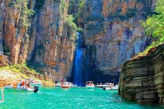

Capitólio é um dos destinos naturais mais impressionantes de Minas Gerais, situado às margens do imenso Lago de Furnas, também chamado de "Mar de Minas". Suas paisagens são marcadas por cânions grandiosos, cachoeiras cristalinas e mirantes espetaculares, tornando-se um verdadeiro refúgio para quem ama contato com a natureza e aventura. A cidade combina beleza natural, tranquilidade e atividades emocionantes, sendo um dos locais mais procurados do estado para turismo ecológico e passeios ao ar livre.
Os Cânions de Furnas são um dos principais atrativos da região. Suas formações rochosas imponentes, que chegam a dezenas de metros de altura, contrastam com as águas verde-esmeralda do lago, criando um cenário único. Passeios de lancha são a melhor forma de explorar essa maravilha natural, permitindo que os visitantes se aproximem das paredes rochosas e das cachoeiras que desaguam diretamente no lago. A sensação de navegar entre essas imensas formações é simplesmente inesquecível.
Além dos cânions, Capitólio abriga diversas cachoeiras espetaculares. A Cachoeira Lagoa Azul, com suas águas cristalinas e de coloração azul-turquesa, é uma das mais famosas e atrai turistas em busca de banhos refrescantes. Outras quedas d'água, como a Cachoeira do Filó e a Cascata Eco Parque, oferecem piscinas naturais perfeitas para relaxar e apreciar a natureza ao redor. Para quem gosta de trilhas e belas vistas, o Mirante dos Cânions proporciona um panorama incrível da imensidão do Lago de Furnas e de toda a região.
Capitólio também se destaca pela sua rica biodiversidade e clima agradável durante todo o ano, tornando a visita sempre uma excelente escolha. Seja para quem deseja relaxar, explorar paisagens incríveis ou viver experiências únicas em meio à natureza, esse destino encanta a todos que o conhecem.
